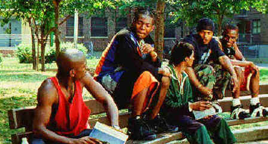

Universal/1995/129m/ANA 1.85
When Rodney Little, a drug dealer who runs the kids peddling his poison on the street , asks Strike, his main corner clocker to perform a small service in the form of murder as a requisite for his moving up the drug ladder, Strike’s world turns upside down. Writer Richard Price creates some interesting contrasts in the character of Strike that translate with cinematic power. His hobby of model railroad trains go a long way to understanding elements of Strike and why the plot plays out in other than obvious fashion. Clockers is fashioned with power and care. The complexities of the story are woven tightly. Directed by Spike Lee, Clockers proves Lee capable of some direct and hard-edged movie making.
 |
The park bench office in Clockers©Universal |
Lee has cast newcomer Mekhi Phifer
in the pivotal role of Strike, the young drug dealer at the center of Clockers Phifer
is merely adequate. He’s not up to carrying the film. His performance is played too
much as a one note sonata. Harvey Keitel turns in another strong performance as the cop on
Strike’s case. Clockers might have been a better movie with more exposition on
Keitel’s Rocco Klein, but then, that’s not Lee’s focus. Stalwart performer
Delroy Lindo laces Rodney the drug lord with extreme menace.
Clockers is shot with total assurance by Lee. Crime scenes
are captured with a casual cruelty that adds up to enormous screen power. Lee’s
camera angles are interesting and he lets obvious technical artifice interfere with the
story telling only once. Lee does a fine job of controlling the various elements of the
movie making process. Camera, music, editing, set design are blended perfectly by the
director. Lee makes Clockers powerful viewing.
It appears that contrast and chroma levels on Clockers have
been pumped. I don’t recall it looking this way in the theater. The
result is a very artificial, electronically altered looking DVD. Yet, the images are
sharp, colors intense and often pleasing. The film was shot very grainy and it is evident
in the transfer. It looks like the colorist tried to alter Lee’s look on Clockers.
The Dolby Digital 5:1 sound is clean and open, though most of the surround information
is music. Directional information is accurate and surround ambiance creates the world of Clockers
convincingly.